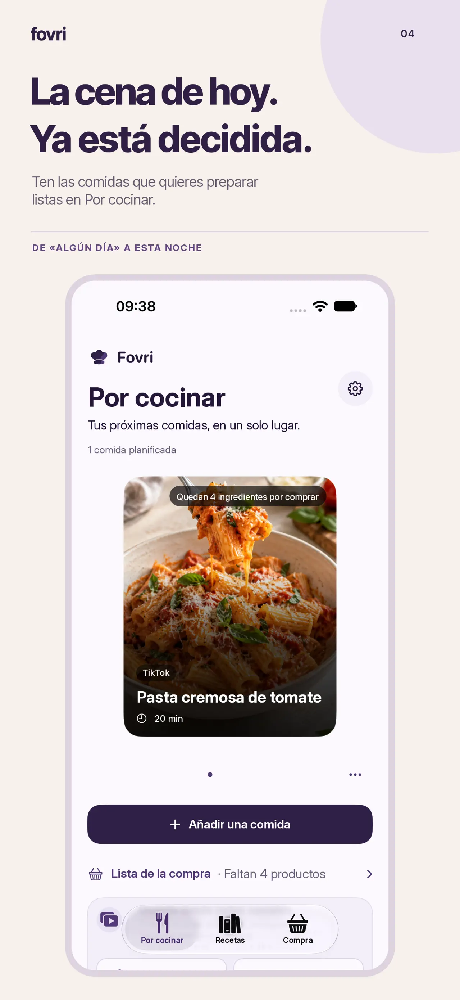
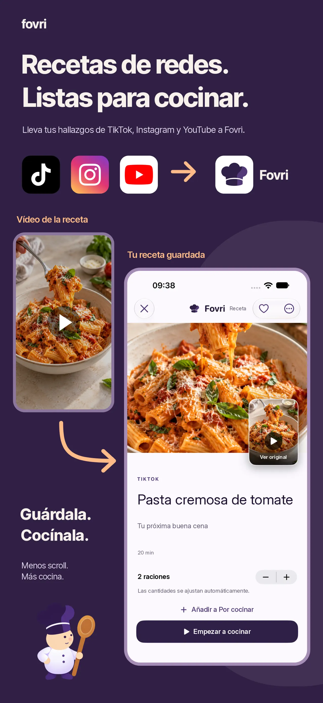
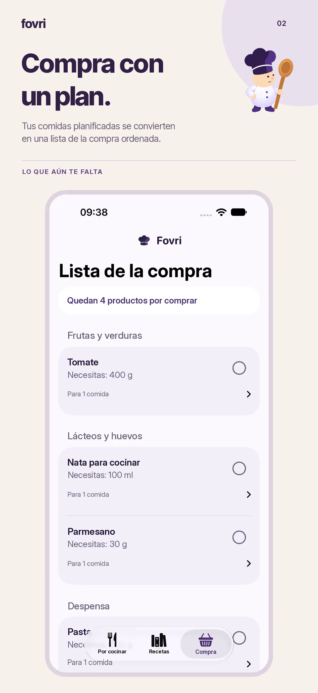
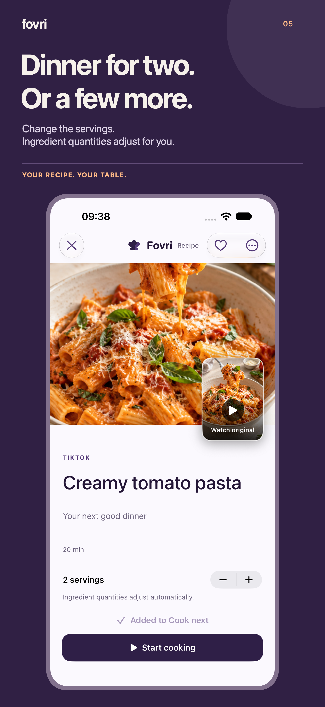
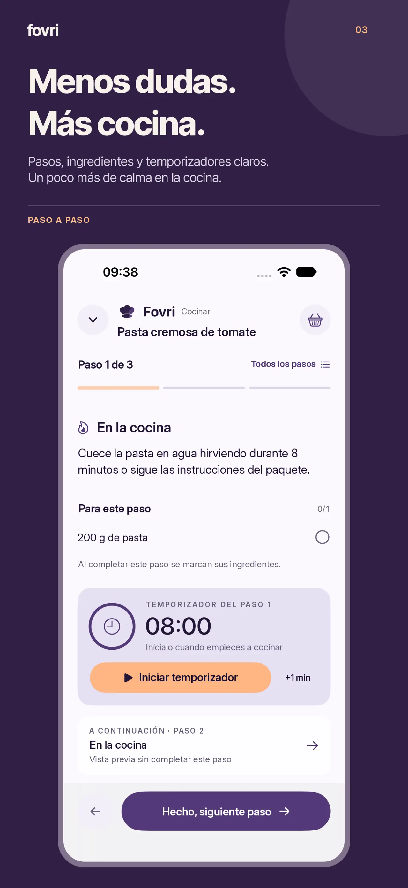
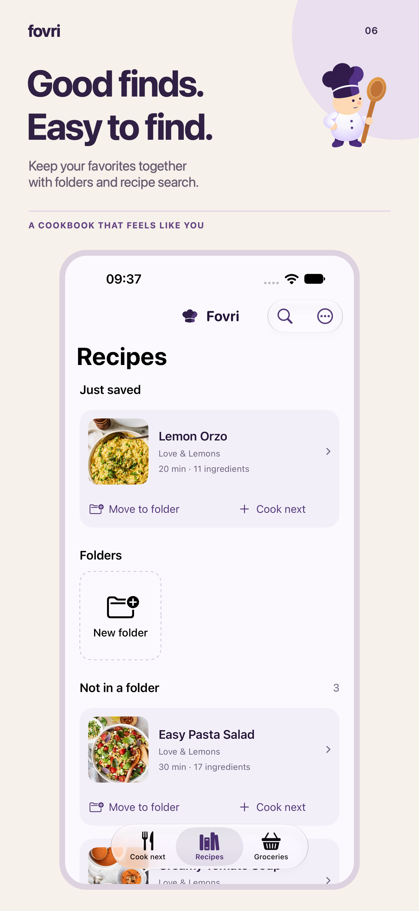

Ten lista la respuesta para esta noche.
Por cocinar reúne las comidas que de verdad planeas preparar.

 fovri
fovriRECETARIO · MENÚ SEMANAL · LISTA DE LA COMPRA
Convierte vídeos y enlaces de recetas en un recetario editable. Decide qué cocinar, compra lo que falta y sigue los pasos sin volver a tu feed.


01 / LA RECETA DESPUÉS DEL SCROLL
Fovri da a las comidas que quieres cocinar un hogar más tranquilo: consultable, editable y preparado cuando el hambre sustituya a la inspiración.
02 / GUARDAR
Comparte un enlace público con Fovri o pégalo en la app. Fovri reúne la información disponible en una receta editable y mantiene la fuente al alcance.
03 / PLANIFICAR
Lleva una receta a Por cocinar, ajusta raciones y añade lo que falta a una sola lista de la compra.
Por cocinar reúne las comidas que de verdad planeas preparar.

Convierte las recetas planificadas en una lista de la compra.

Cambia raciones y ajusta cantidades compatibles.


04 / COCINAR
Sigue el método sin pellizcar ni desplazarte por una página larga. Cada paso mantiene cerca los ingredientes relevantes y admite temporizadores independientes.
05 / CONSERVAR
Busca por receta o ingrediente, guarda favoritos, organiza carpetas y conserva una copia de seguridad que tú controlas.

GUÍAS DE COCINA
Once guías sobre recetarios digitales, menús semanales, listas de compra y recetas de TikTok o Instagram.
Ver las 11 guías →06 / HONESTO POR DISEÑO
Recetas, planes, lista, borradores y fotos viven en el almacenamiento local.
Fovri contacta con la fuente y puede usar ayuda en la nube para recuperar detalles.
Revisa alérgenos, temperaturas, cantidades y manipulación segura.
FOVRI EN ESPAÑOL
Imágenes oficiales publicadas en el App Store español.
07 / FOVRI PRO
Después del onboarding, Fovri requiere una suscripción activa. Elige acceso mensual o anual; los nuevos usuarios elegibles pueden recibir la prueba de 14 días del plan anual.
FOVRI PRO08 / ANTES DE COCINAR
Enlaces públicos de TikTok, Instagram, YouTube y webs de recetas. El resultado depende de la información que publique la fuente.
Sí. La fuente queda adjunta para que puedas volver a ella.
En el almacenamiento local de tu iPhone.
Incluye el onboarding y después requiere Fovri Pro. El plan mensual se cobra al momento; el anual puede incluir una prueba de 14 días para usuarios elegibles.
LA PRÓXIMA BUENA COMIDA EMPIEZA CON UNA IDEA GUARDADA